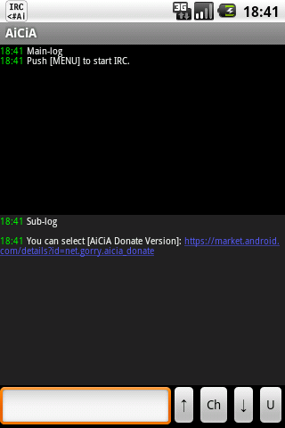
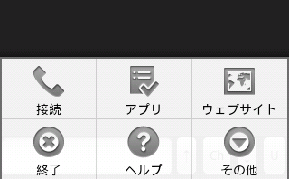
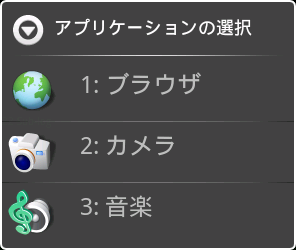
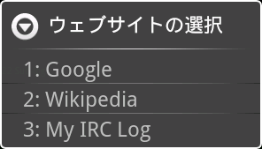
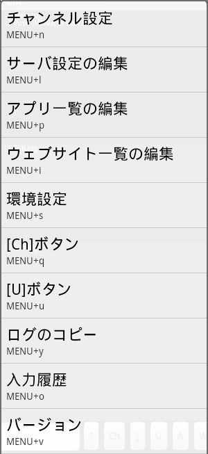
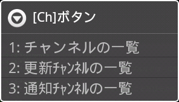
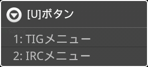
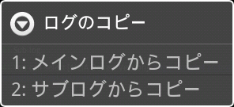
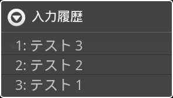

AiCiAのメイン画面
Androidアプリメニュー画面からAiCiAのアイコンをタップすると、AiCiAが起動します。
その後のAiCiAの操作は、[Menu]ボタンを押すと表示されるメインメニューで行います。

メインメニュー
- 接続
-
IRCサーバへの自動接続を開始します。「サーバ設定」で、[自動接続]がONになっているサーバのみが対象となります。
|
[自動接続]がOFFになっているサーバへ接続するには、[その他]-[サーバ設定]メニューからサーバを指定し、表示されたメニューから[接続]を選びます。
|
- アプリ
-

アプリ選択メニュー
登録したアプリを起動します。アプリの登録は、[その他]-[アプリ一覧の編集]で行います。
|
起動したアプリを[Back]ボタンなどで閉じると、AiCiAに帰ってくることができます。
|
- ウェブサイト
-

ウェブサイト選択メニュー
登録したウェブサイトをブラウザで表示します。ウェブサイトの登録は、[その他]-[ウェブサイト一覧の編集]で行います。
|
ブラウザを閉じると、AiCiAに帰ってくることができます。
|
- 終了
-
サービスによるIRC接続をすべて切断し、AiCiAを終了します。
|
この操作を行わずにBackボタンでAiCiAのアプリケーションウィンドウを閉じた場合は、IRC接続は維持されます。
|
- ヘルプ
-
本ヘルプを表示します。
- その他
-

メインメニュー - その他
追加のメニューを表示します。
- チャンネル設定
-
現在メインログウィンドウに表示しているチャンネルの動作設定を行います。
- サーバ設定の編集
-
接続先となるIRCサーバの設定を行います。
- アプリ一覧の編集
-
[アプリ]メニューで起動できるアプリの一覧を編集します。
- ウェブサイト一覧の編集
-
[ウェブサイト]メニューで表示できるウェブサイトの一覧を編集します。
- 環境設定
-
AiCiAの環境設定を行います。
- [Ch]ボタン
-

「[Ch]ボタン」メニュー
[Ch]ボタンと同様の動作をします。
- [U]ボタン
-

「[U]ボタン」メニュー
[U]ボタンと同様の動作をします。
- ログのコピー
-

「ログのコピー」メニュー
ログウィンドウ内のテキストをクリップボードへコピーします。
- 入力履歴
-

「入力履歴」メニュー
入力エリアのダブルタップと同様の動作をします。
- バージョン
-
AiCiAアプリケーションのバージョン情報を表示します。